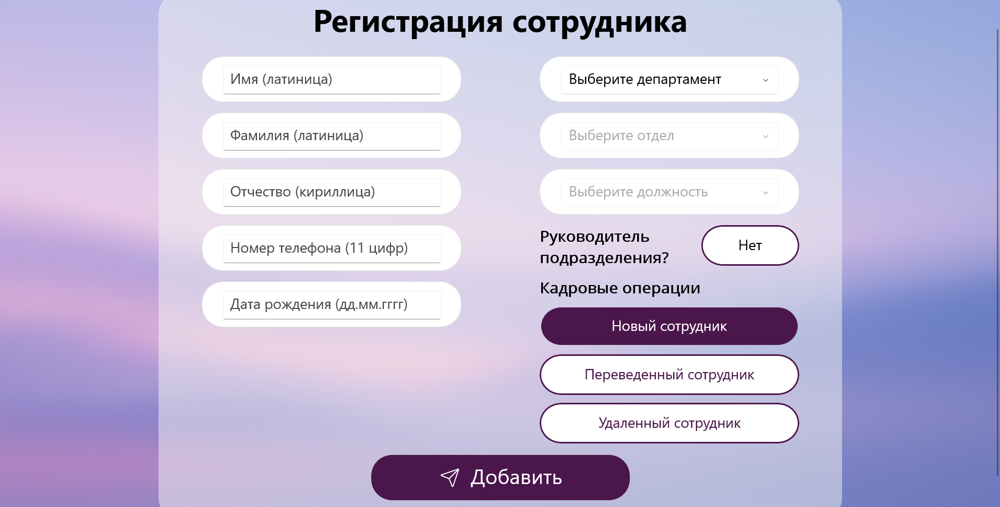

Авторизация
После запуска программы отображается окно авторизации.
Введите логин и пароль. При неправильном вводе появится сообщение об ошибке.
Нажмите кнопку показать пароль — содержимое отобразится. Нажмите ещё раз — снова скроется.
После корректного ввода происходит вход в систему, где каждому пользователю отображается своя рабочая зона по роли.
Работа специалиста по кадрам
Откроется окно для добавления или редактирования сотрудника.
Введите имя, фамилию, отчество, номер телефона и дату рождения.
Выберите департамент → отдел → должность из выпадающих списков.
Укажите, является ли сотрудник руководителем.
Выберите кадровую операцию:
- Новый сотрудник
- Переведённый сотрудник
- Удалённый сотрудник
Для перевода или удаления сотрудника нажмите Найти пользователя.
После выбора автоматически заполнятся поля. Выполните операцию и нажмите нужную кнопку.
Руководитель подразделения
Откроется таблица сотрудников. Выберите сотрудника для управления правами.
Нажмите Загрузить чтобы отобразить текущие права.
Чтобы скопировать права одного пользователя другому, используйте кнопки Копировать и Вставить.
Нажмите на нужную кнопку сервиса (например, Bitrix или Email), заполните данные.
Нажмите на сохранить и введите коментарий к заявке чтобы отправить заявку на исполнение.
Окно исполнителя
Здесь отображаются все заявки от руководителей.
Выберите заявку — рабочая зона отобразит её подробности. Правильно выданные права окрасятся в фиолетовый цвет.
Нажмите на права, которые предоставлены. После завершения смените статус на Выполнено.
Окно администратора
Вы увидите таблицу со всеми сотрудниками и их данными.
Можно загрузить права пользователя при нажатии на кнопку "Загрузить", нужно лишь перед этим выбрать пользователя из таблицы.
При выборе пользователя и нажатии на кнопку "Сохранить" откроется диалоговое окно где можно изменить логин или пароль пользователя.
При выборе пользователя и нажатии на кнопку "Удалить" нужно будет подтвердить удаление пользователя, после чего пользователь удаляется из базы данных.
В окне действий можно просмотреть, отсортировать, отфильтровать действия и экспортировать их.
Рабочие пространства
Email (KerioConnect)
1. Перейдите в рабочее пространство Email.
2. Введите логин, пароль, полное имя пользователя, размер дискового пространства в Гигобайтах и описание.
3. Нажмите кнопку Добавить — пользователь появится в таблице.
4. Для удаления выберите пользователя и нажмите Удалить.
5. Чтобы заблокировать/разблокировать пользователя — выберите пользователя и нажмите Блокировать/Разблокировать доступ.
Bitrix
1. Откройте раздел Bitrix.
2. Введите фамилию, имя, email сотрудника.
3. Нажмите Добавить. Пользователю придёт приглашение на почту.
4. Чтобы удалить пользователя — выделите в таблице и нажмите Удалить.
Google Drive
1. Перейдите в раздел Google Drive.
2. Выберите корпоративную почту из выпадающего списка.
3. Выберите нужную папку, которой необходимо предоставить доступ.
4. Введите email сотрудника и выберите роль доступа.
5. Нажмите Добавить. Пользователь получит доступ.
6. Чтобы удалить доступ — выберите строку в таблице и нажмите Удалить.
Active Directory (Домен)
1. Перейдите в рабочую область Active Directory.
2. Введите имя, фамилию, описание пользователя. Нажмите Добавить.
3. Чтобы удалить — выделите пользователя и нажмите Удалить.
4. Для назначения доступа:
- Выберите нужную папку
- Выберите группу
- Выберите пользователя
- Нажмите Назначить доступ
5. Для блокировки доступа — выполните аналогичные действия, но нажмите Блокировать доступ.
RADIUS
1. Откройте раздел RADIUS.

2. Для добавления по логину и паролю — заполните поля и нажмите Добавить.
3. Для добавления устройства — введите MAC-адрес, имя владельца и модель.
4. Нажмите Добавить. Устройство или пользователь появятся в таблице.
5. Для удаления — выберите нужную строку и нажмите Удалить.
6. Нажмите Обновить для синхронизации данных.
7. Чтобы сгенерировать пароль — нажмите на иконку ключа, пароль появится в поле.